Introduction to Seaborn
Contents
11. Introduction to Seaborn¶
seaborn 是 build 在 matplotlib 上，和 pandas 合作的很好
import seaborn as sns
import matplotlib.pyplot as plt
import pandas as pd
11.1. Scatter plot¶
11.1.1. Data¶
11.1.1.1. student_data¶
student_data = pd.read_csv("data/student-alcohol-consumption.csv", index_col=0)
student_data
| school | sex | age | famsize | Pstatus | Medu | Fedu | traveltime | failures | schoolsup | ... | goout | Dalc | Walc | health | absences | G1 | G2 | G3 | location | study_time | |
|---|---|---|---|---|---|---|---|---|---|---|---|---|---|---|---|---|---|---|---|---|---|
| 0 | GP | F | 18 | GT3 | A | 4 | 4 | 2 | 0 | yes | ... | 4 | 1 | 1 | 3 | 6 | 5 | 6 | 6 | Urban | 2 to 5 hours |
| 1 | GP | F | 17 | GT3 | T | 1 | 1 | 1 | 0 | no | ... | 3 | 1 | 1 | 3 | 4 | 5 | 5 | 6 | Urban | 2 to 5 hours |
| 2 | GP | F | 15 | LE3 | T | 1 | 1 | 1 | 3 | yes | ... | 2 | 2 | 3 | 3 | 10 | 7 | 8 | 10 | Urban | 2 to 5 hours |
| 3 | GP | F | 15 | GT3 | T | 4 | 2 | 1 | 0 | no | ... | 2 | 1 | 1 | 5 | 2 | 15 | 14 | 15 | Urban | 5 to 10 hours |
| 4 | GP | F | 16 | GT3 | T | 3 | 3 | 1 | 0 | no | ... | 2 | 1 | 2 | 5 | 4 | 6 | 10 | 10 | Urban | 2 to 5 hours |
| ... | ... | ... | ... | ... | ... | ... | ... | ... | ... | ... | ... | ... | ... | ... | ... | ... | ... | ... | ... | ... | ... |
| 390 | MS | M | 20 | LE3 | A | 2 | 2 | 1 | 2 | no | ... | 4 | 4 | 5 | 4 | 11 | 9 | 9 | 9 | Urban | 2 to 5 hours |
| 391 | MS | M | 17 | LE3 | T | 3 | 1 | 2 | 0 | no | ... | 5 | 3 | 4 | 2 | 3 | 14 | 16 | 16 | Urban | <2 hours |
| 392 | MS | M | 21 | GT3 | T | 1 | 1 | 1 | 3 | no | ... | 3 | 3 | 3 | 3 | 3 | 10 | 8 | 7 | Rural | <2 hours |
| 393 | MS | M | 18 | LE3 | T | 3 | 2 | 3 | 0 | no | ... | 1 | 3 | 4 | 5 | 0 | 11 | 12 | 10 | Rural | <2 hours |
| 394 | MS | M | 19 | LE3 | T | 1 | 1 | 1 | 0 | no | ... | 3 | 3 | 3 | 5 | 5 | 8 | 9 | 9 | Urban | <2 hours |
395 rows × 29 columns
11.1.1.2. mpg¶
mpg = pd.read_csv("data/mpg.csv")
mpg
| mpg | cylinders | displacement | horsepower | weight | acceleration | model_year | origin | name | |
|---|---|---|---|---|---|---|---|---|---|
| 0 | 18.0 | 8 | 307.0 | 130.0 | 3504 | 12.0 | 70 | usa | chevrolet chevelle malibu |
| 1 | 15.0 | 8 | 350.0 | 165.0 | 3693 | 11.5 | 70 | usa | buick skylark 320 |
| 2 | 18.0 | 8 | 318.0 | 150.0 | 3436 | 11.0 | 70 | usa | plymouth satellite |
| 3 | 16.0 | 8 | 304.0 | 150.0 | 3433 | 12.0 | 70 | usa | amc rebel sst |
| 4 | 17.0 | 8 | 302.0 | 140.0 | 3449 | 10.5 | 70 | usa | ford torino |
| ... | ... | ... | ... | ... | ... | ... | ... | ... | ... |
| 393 | 27.0 | 4 | 140.0 | 86.0 | 2790 | 15.6 | 82 | usa | ford mustang gl |
| 394 | 44.0 | 4 | 97.0 | 52.0 | 2130 | 24.6 | 82 | europe | vw pickup |
| 395 | 32.0 | 4 | 135.0 | 84.0 | 2295 | 11.6 | 82 | usa | dodge rampage |
| 396 | 28.0 | 4 | 120.0 | 79.0 | 2625 | 18.6 | 82 | usa | ford ranger |
| 397 | 31.0 | 4 | 119.0 | 82.0 | 2720 | 19.4 | 82 | usa | chevy s-10 |
398 rows × 9 columns
11.1.2. 基本 scatter plot¶
sns.scatterplot(x="absences", y="G3",
data=student_data);
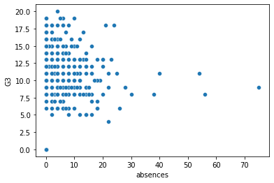
G3 是 第三次段考的意思。可以看到，缺席率越高，看起來成績越低
11.1.3. hue (i.e. color)¶
sns.scatterplot(x="absences", y="G3",
data=student_data,
hue="location");
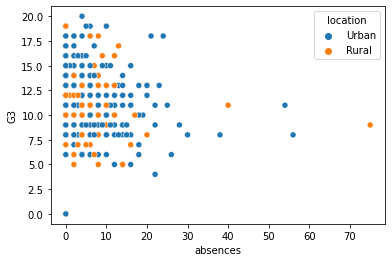
可以看到，第三軸放上 location 後，結論是：不論是城市或鄉下的小孩，都是缺席越多，成績越差
11.1.3.1. 第三個變數的顏色自己指定¶
hue_colors = {
"Urban": "black",
"Rural": "red"
}
sns.scatterplot(x="absences", y="G3",
data=student_data,
hue="location",
hue_order = ["Rural", "Urban"],
palette = hue_colors);
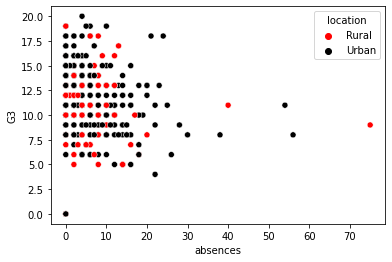
11.1.3.2. 第三個變數的順序自己指定¶
sns.scatterplot(x="absences", y="G3",
data=student_data,
hue="location",
hue_order = ["Rural", "Urban"]); # 先 Rural 再 Urban
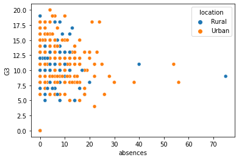
11.1.4. size¶
sns.scatterplot(
x="horsepower",
y="mpg",
data=mpg,
size="cylinders"
);
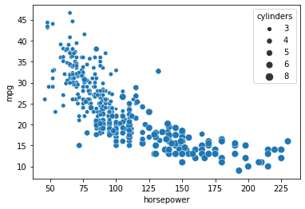
可以看到，汽缸數越多(cylinders)，horsepower越大，而油耗越差(mpg)
sns.scatterplot(
x="horsepower",
y="mpg",
data=mpg,
size="cylinders",
hue = "cylinders"
);
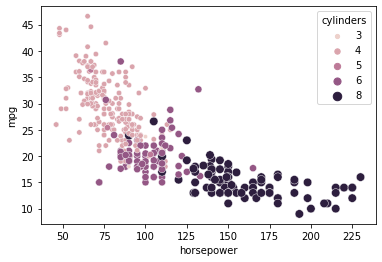
加上顏色，看得更清楚
也因為 cylinders 被他認為是 float 變數，所以當第三軸的顏色時，他是給你 gradient 顏色，比較好觀察
11.1.5. style (點的style)¶
sns.scatterplot(
x="acceleration",
y="mpg",
data=mpg,
style ="origin",
hue = "origin"
);
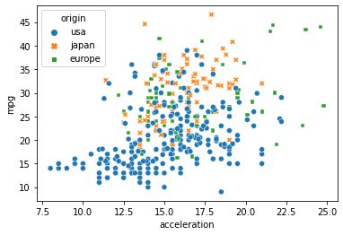
可以看到，usa的車子最多，而且比起 japan 和 europe 的特色，是他有一部分都聚在左下角：表示加速快 & 油耗差
sns.scatterplot(
x = "absences",
y = "G3",
data = student_data,
style = "traveltime",
hue = "traveltime"
);
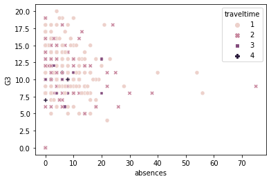
11.1.6. alpha¶
11.1.7. facet_grid 類型¶
ggplot 的 facet_grid/facet_wrap，在 sns 中，是用
relplot()來實現relplot 是 relational plot 的縮寫，它包含 scatter plot 和 line plot.
我們使用 relplot 的時機是，你想做出 ggplot 那種 facet_wrap 的效果
11.1.7.1. by column 畫圖¶
sns.relplot(x="absences",
y="G3",
data=student_data,
kind = "scatter",
col = "location");
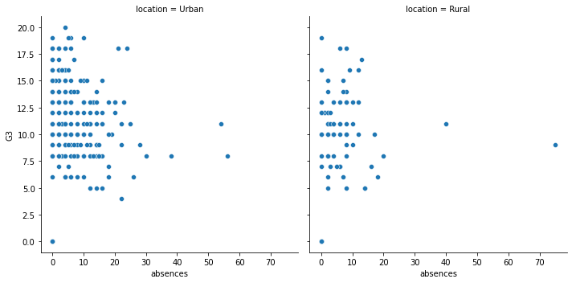
11.1.7.2. by column 指定順序¶
sns.relplot(x="absences",
y="G3",
data=student_data,
kind = "scatter",
col = "location",
col_order = ["Rural", "Urban"]);
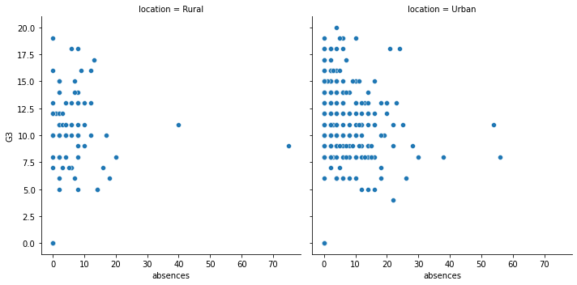
11.1.7.3. 指定 column 行數¶
可以定義 by col 畫圖時，最多幾個後要換行
sns.relplot(x="absences",
y="G3",
data=student_data,
kind = "scatter",
col = "study_time",
col_wrap = 2);
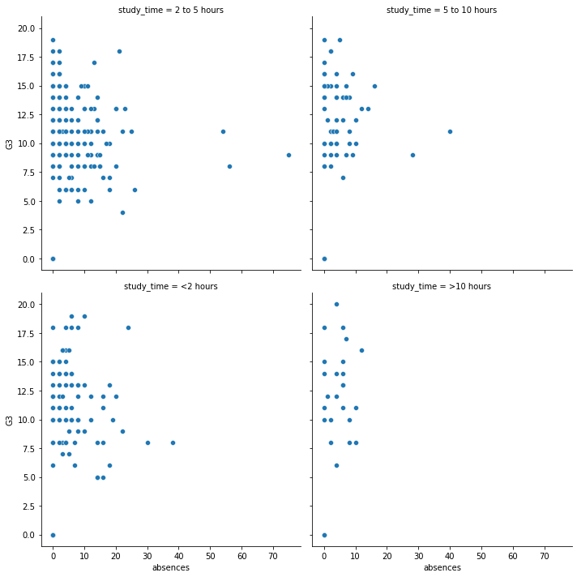
11.1.7.4. by row 畫圖¶
同樣的做法，可以改成 by row
sns.relplot(x="absences",
y="G3",
data=student_data,
kind = "scatter",
row = "location");
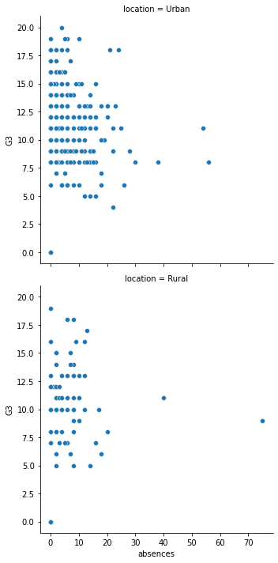
11.1.7.5. by column & row (R 的 facet_grid)¶
如果要做到 facet_grid (兩個變數交叉)，那就又 col 又 row
sns.relplot(x="absences",
y="G3",
data=student_data,
kind = "scatter",
col = "study_time",
row = "location");
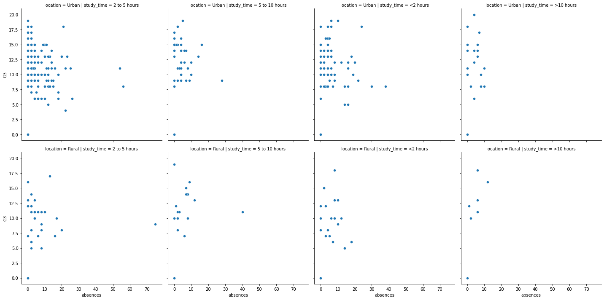
當然，剛剛 row 和 column 用過的細節設定都還是可以下：
sns.relplot(x="G1", y="G3", # 第一學期 和 第三學期 的成績
data=student_data,
kind="scatter",
col="schoolsup", # 有沒有獲得學校補助 school support
col_order=["yes", "no"],
row = "famsup", # 有沒有獲得家庭補助 family support
row_order = ["yes", "no"])
<seaborn.axisgrid.FacetGrid at 0x1325f9ee0>
11.3. count plots (bar chart)¶
11.3.1. 基本 countplot¶
sns.countplot(x = "school",
data = student_data);
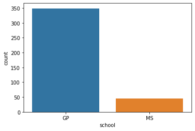
11.3.2. 兩維的 countplot¶
palette_colors = {"Rural": "green", "Urban": "blue"}
sns.countplot(x = "school",
data = student_data,
hue = "location",
palette = palette_colors);
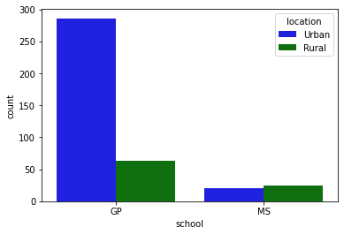
countries = pd.read_csv("data/countries-of-the-world.csv")
countries
| Country | Region | Population | Area (sq. mi.) | Pop. Density (per sq. mi.) | Coastline (coast/area ratio) | Net migration | Infant mortality (per 1000 births) | GDP ($ per capita) | Literacy (%) | Phones (per 1000) | Arable (%) | Crops (%) | Other (%) | Climate | Birthrate | Deathrate | Agriculture | Industry | Service | |
|---|---|---|---|---|---|---|---|---|---|---|---|---|---|---|---|---|---|---|---|---|
| 0 | Afghanistan | ASIA (EX. NEAR EAST) | 31056997 | 647500 | 48,0 | 0,00 | 23,06 | 163,07 | 700.0 | 36,0 | 3,2 | 12,13 | 0,22 | 87,65 | 1 | 46,6 | 20,34 | 0,38 | 0,24 | 0,38 |
| 1 | Albania | EASTERN EUROPE | 3581655 | 28748 | 124,6 | 1,26 | -4,93 | 21,52 | 4500.0 | 86,5 | 71,2 | 21,09 | 4,42 | 74,49 | 3 | 15,11 | 5,22 | 0,232 | 0,188 | 0,579 |
| 2 | Algeria | NORTHERN AFRICA | 32930091 | 2381740 | 13,8 | 0,04 | -0,39 | 31 | 6000.0 | 70,0 | 78,1 | 3,22 | 0,25 | 96,53 | 1 | 17,14 | 4,61 | 0,101 | 0,6 | 0,298 |
| 3 | American Samoa | OCEANIA | 57794 | 199 | 290,4 | 58,29 | -20,71 | 9,27 | 8000.0 | 97,0 | 259,5 | 10 | 15 | 75 | 2 | 22,46 | 3,27 | NaN | NaN | NaN |
| 4 | Andorra | WESTERN EUROPE | 71201 | 468 | 152,1 | 0,00 | 6,6 | 4,05 | 19000.0 | 100,0 | 497,2 | 2,22 | 0 | 97,78 | 3 | 8,71 | 6,25 | NaN | NaN | NaN |
| ... | ... | ... | ... | ... | ... | ... | ... | ... | ... | ... | ... | ... | ... | ... | ... | ... | ... | ... | ... | ... |
| 222 | West Bank | NEAR EAST | 2460492 | 5860 | 419,9 | 0,00 | 2,98 | 19,62 | 800.0 | NaN | 145,2 | 16,9 | 18,97 | 64,13 | 3 | 31,67 | 3,92 | 0,09 | 0,28 | 0,63 |
| 223 | Western Sahara | NORTHERN AFRICA | 273008 | 266000 | 1,0 | 0,42 | NaN | NaN | NaN | NaN | NaN | 0,02 | 0 | 99,98 | 1 | NaN | NaN | NaN | NaN | 0,4 |
| 224 | Yemen | NEAR EAST | 21456188 | 527970 | 40,6 | 0,36 | 0 | 61,5 | 800.0 | 50,2 | 37,2 | 2,78 | 0,24 | 96,98 | 1 | 42,89 | 8,3 | 0,135 | 0,472 | 0,393 |
| 225 | Zambia | SUB-SAHARAN AFRICA | 11502010 | 752614 | 15,3 | 0,00 | 0 | 88,29 | 800.0 | 80,6 | 8,2 | 7,08 | 0,03 | 92,9 | 2 | 41 | 19,93 | 0,22 | 0,29 | 0,489 |
| 226 | Zimbabwe | SUB-SAHARAN AFRICA | 12236805 | 390580 | 31,3 | 0,00 | 0 | 67,69 | 1900.0 | 90,7 | 26,8 | 8,32 | 0,34 | 91,34 | 2 | 28,01 | 21,84 | 0,179 | 0,243 | 0,579 |
227 rows × 20 columns
countries.info()
<class 'pandas.core.frame.DataFrame'>
RangeIndex: 227 entries, 0 to 226
Data columns (total 20 columns):
# Column Non-Null Count Dtype
--- ------ -------------- -----
0 Country 227 non-null object
1 Region 227 non-null object
2 Population 227 non-null int64
3 Area (sq. mi.) 227 non-null int64
4 Pop. Density (per sq. mi.) 227 non-null object
5 Coastline (coast/area ratio) 227 non-null object
6 Net migration 224 non-null object
7 Infant mortality (per 1000 births) 224 non-null object
8 GDP ($ per capita) 226 non-null float64
9 Literacy (%) 209 non-null object
10 Phones (per 1000) 223 non-null object
11 Arable (%) 225 non-null object
12 Crops (%) 225 non-null object
13 Other (%) 225 non-null object
14 Climate 205 non-null object
15 Birthrate 224 non-null object
16 Deathrate 223 non-null object
17 Agriculture 212 non-null object
18 Industry 211 non-null object
19 Service 212 non-null object
dtypes: float64(1), int64(2), object(17)
memory usage: 35.6+ KB
sns.scatterplot(x = "GDP ($ per capita)", y = "Literacy (%)", data = countries);
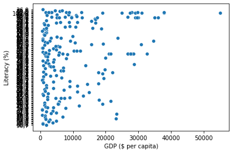